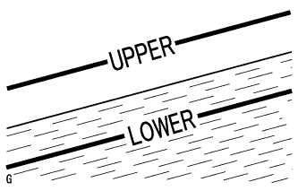
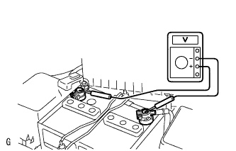
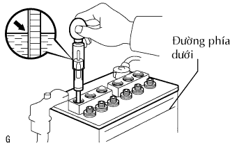
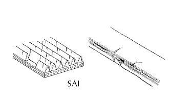
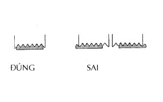
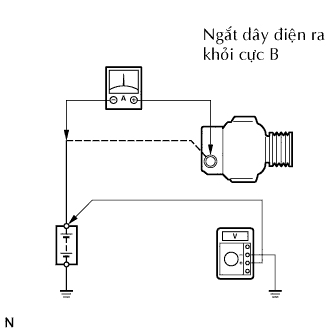

HỆ THỐNG NẠP > KIỂM TRA TRÊN XE |
| 1. KIỂM TRA TÌNH TRẠNG ẮC QUY |
Kiểm tra hư hỏng hoặc biến dạng của ắc quy. Nếu bị biến dạng hoặc có rò rỉ, hãy thay thế ắc quy.
Kiểm tra mức dung dịch cho từng ngăn.
|  |
cho Loại ắc quy không cần bảo dưỡng:
|  |
cho Loại ắc quy cần bảo dưỡng:
|  |
| 2. KIỂM TRA CỰC ẮC QUY VÀ CẦU CHÌ |
Kiểm tra rằng các cực ắc quy không bị lỏng hoặc bị ăn mòn.
Nếu các điện cực bị ăn mòn, hãy làm sạch các cực.
Đo điện trở của các cầu chì H.
| 3. KIỂM TRA ĐAI DẪN ĐỘNG |
|  |
Kiểm tra mòn, nứt hoặc dấu hiệu hư hỏng khác của dây đai.
Nếu tìm thấy hư hỏng, hãy thay đai dẫn động.
|  |
Kiểm tra rằng đai được lắp chính xác vào rãnh đai.
| 4. QUAN SÁT DÂY ĐIỆN CỦA MÁY PHÁT |
Kiểm tra rằng dây điện đang ở tình trạng tốt.
| 5. LẮNG GHE TIẾNG KÊU BẤT THƯỜNG TỪ MÁY PHÁT |
Kiểm tra rằng máy phát không phát ra bất kỳ tiếng kêu bất thường nào trong khi động cơ đang nổ máy.
| 6. KIỂM TRA MẠCH ĐÈN BÁO NẠP |
Bật khoá điện ON. Kiểm tra rằng mạch đèn báo nạp sáng lên.
Khởi động động cơ và kiểm tra rằng đèn tắt đi.
Nếu đèn hoạt động không như tiêu chuẩn, hãy chẩn đoán theo mạch đèn báo nạp.
| 7. KIỂM TRA MẠCH NẠP KHÔNG CÓ TẢI |
|  |
Nối Vônkế và Ampe kế với mạch nạp như sau.
Ngắt dây điện ra khỏi cực B của máy phát và nối nó vào dây (-) của Ampe kế.
Nối cực dương (+) của Ampe với cực B của máy phát.
Nối cực dương (+) của Vônkế với cực (+) của ắc quy.
Tiếp mát dây (-) của Vôn kế.
Kiểm tra mạch nạp.
Duy trì tốc độ động cơ ở 2,000 vòng/phút. Kiểm tra chỉ số trên Ampe kế và Vônkế.
| 8. KIỂM TRA MẠCH NẠP CÓ TẢI |
Khi động cơ đang chạy với tốc độ 2,000 vòng/phút, hãy bật đèn pha ở chế độ chiếu xa và bật công tắc quạt bộ sưởi ấm đến vị trí HI.
Kiểm tra chỉ số của Ampe kế.